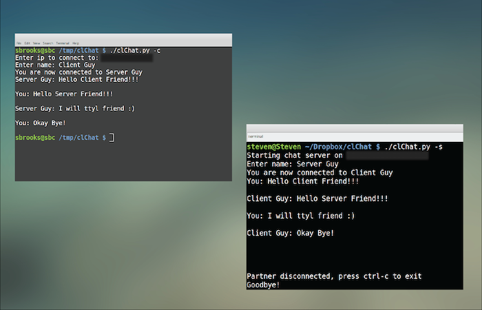
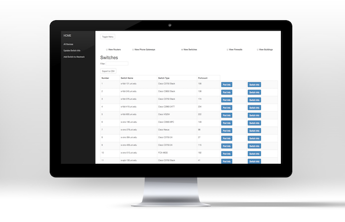
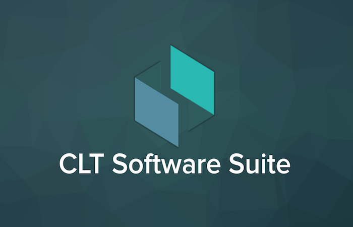
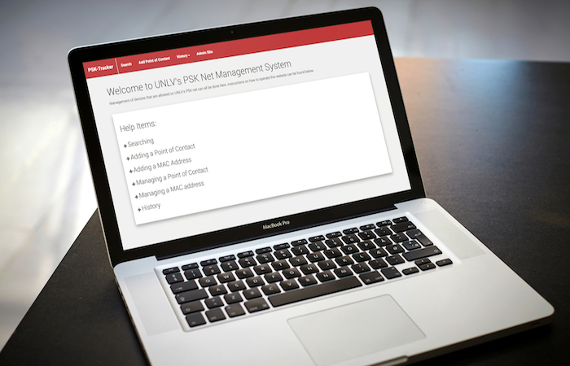

Senior Software Engineer with 9+ years building large-scale e-commerce and payment platforms on AWS with microservices and event-driven architectures. I led Guest Checkout at Zappos/Amazon, now driving 7–10% of company sales, and integrated Amazon Pay, contributing roughly 6% of sales. I work across Java, Python, and SQL, care deeply about CI/CD and observability, and love leading cross-functional teams and mentoring engineers. I started out as a biology major, but a research lab got me writing code and I switched to CS for good.

clChat is a chatting application, that works in your terminal. It utilizes the same protocol that gaming systems and torrent programs use in order to allow someone to start a chat server from their house, all without fiddling with any network equipment.

Mactrack is an application internally used by the network engineering team to track and analyze network usage over time; making monitoring and auditing such metrics a trivial and painless task.
wifi.unlv.edu is the site that connects UNLV students, staff, and faculty to the eduroam network. It features a nice user interface that utilizes an operating system detecting instruction page/modal. My involvement involved all of the front end work, making sure the site fit to the standards of an established designer.

Convention Logistics Tracker was the First Place winning entry into UNLV's 2017 Senior Design competition for the Computer Science category. The project had many layers to it, with the end result being a software suite that connected convention goers with organizers.

I wrote UNLV's Wi-Fi PSK Application in order to make an easy to use system to manage access on to UNLV's PSK net. It grants IT groups outside of the network engineering department to control user access to the net, adding and removing users by MAC address.